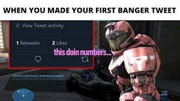

About Nathan.
A short intro to know me.
My name is Nathan Kweon. My birthday is April 24th. This year I transfered to here from Wagner
High School. This will be my first time using HTML. My favorite subjects are Math and Science and my least favorite is English.
Class Periods!
- Eggs
- Milk
- Bread
- Hamburger
- Butter
- Barbed Wire
Class Periods!
- English
- Math
- History
- Russian
- Chemistry
- Lunch
- Health
- Comp Sci
- CAD

Hungry?!??!?!?!
[Intro]
The FitnessGram™ Pacer Test is a multistage aerobic capacity test that progressively gets more difficult as it continues.
The 20 meter pacer test will begin in 30 seconds. Line up at the start.
The running speed starts slowly, but gets faster each minute after you hear this signal.
A single lap should be completed each time you hear this.
Remember to run in a straight line, and run as long as possible.
The second time you fail to complete a lap before the sound, your test is over.
The test will begin on the word start.
On your mark, get ready, start.
[Level 1]
Feel it
One
Two
Three
Four
Five
Six
Seven; end of level one
[Level 2]
Eight
Feel it
Nine
Ten
Eleven
Twelve
Thirteen
Fourteen
Fifteen; end of level two